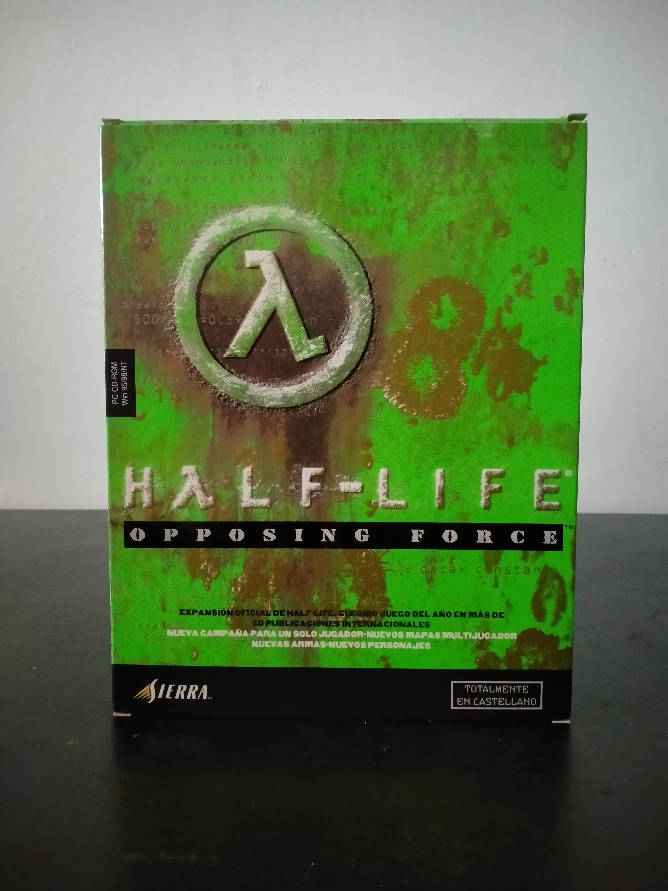

Ficha #000115
Half-Life: Opposing Force
Expansión oficial de Half-Life desarrollada por Gearbox Software que ofrece una nueva perspectiva de los acontecimientos de Black Mesa, esta vez desde el punto de vista de un marine. En Opposing Force, el jugador debe enfrentarse tanto a la amenaza alienígena como a otros peligros dentro del complejo, ampliando la narrativa original con nuevos escenarios, armas y enemigos. Esta edición Big Box española, distribuida por Sierra y totalmente en castellano, requiere el juego original para su funcionamiento y representa una de las expansiones más valoradas de la época por su calidad y coherencia con el universo Half-Life.
- Formato
- Big Box
- Plataforma
- Win95 Win98
- Género
- Acción Shooter en primera persona Ciencia ficción
- Serie
- Big Box Todos
- Desarrollador
- Gearbox Software
- Distribuidor
- Sierra
- EAN
- —
Contenido de la edición
- Caja Big Box
- CD-ROM del juego en caja Jewel Case
- Manual
- Documentación adicional
Preservación
- Protección
- Verificación de CD
- Formato recomendado
- BIN/CUE
- Jugable en virtualización
- Sí
Probable verificación de CD al tratarse de expansión oficial de Half-Life. Pendiente de verificación exacta en esta edición concreta.